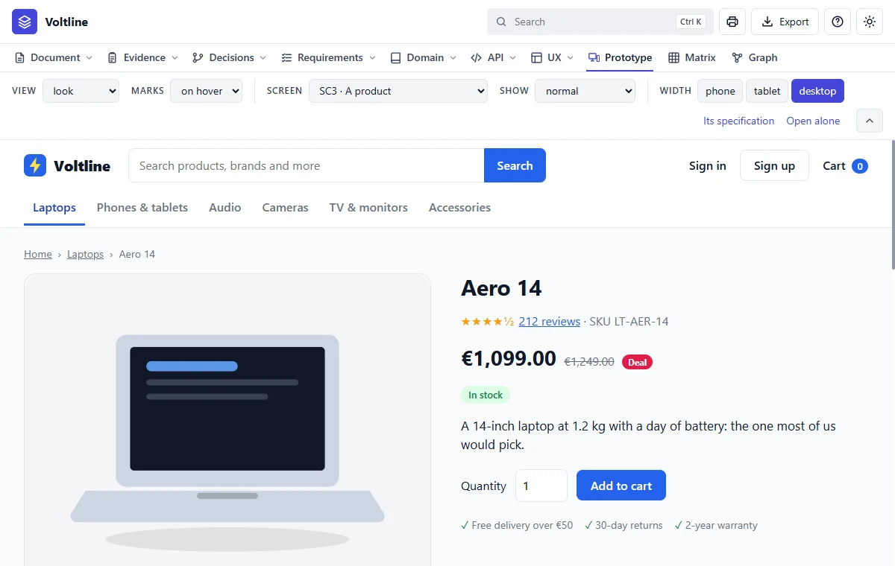
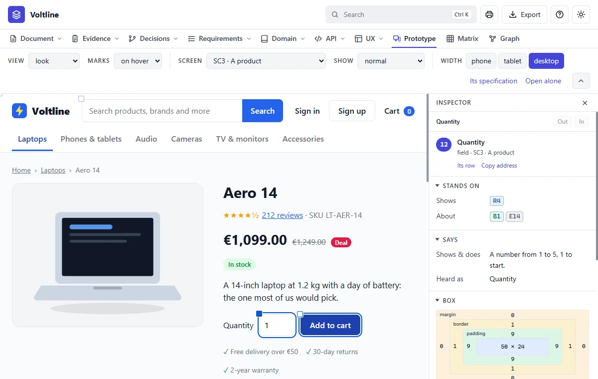

Part 3: Reading what you get
Prototype
In everyday termsThe show flat. Before a block of flats is finished, you can walk round a sample one. A prototype is the same for software: screens that look and click like the real thing, but with nothing behind them.
What it answersWhat will this actually look like, and how does it behave?
The tool, part by part

- 1View. The finished look, or a plain outline called a wireframe.
- 2Marks. Whether the element under the pointer is marked.
- 3Screen. Any screen in the specification.
- 4Show. A state or variant, such as empty or an error.
- 5Width. Phone, tablet or desktop.
- 6Its specification, and Open alone, which shows it with no bars.
- 7Fold. Hides the bars to give the screen more room.

Read it like this
- Pick a screen, and try it at phone width. Most surprises are there.
- Go through Show. Each state and variant has its own look.
- Click a mark to go from what you see to the fact behind it.
- If something's wrong, press Request a change on the element's page.
A prototype is held to what it shows
The words on a prototype are in its file, where no link can reach them. So the skill remembers what each screen stood on when its file was last in step. If that moves and the file doesn't, the screen is listed under What is open as a prototype to look at, and it holds up an agreement until someone redraws it or confirms it still holds.
Mistakes people make
- Taking it for the product. It looks real, but nothing behind it works. Nothing you type is saved, and no order is placed.
- Confirming without looking.
confirm-drawnmeans someone read the drawing. Used blindly, it hides the very thing it's there to catch.